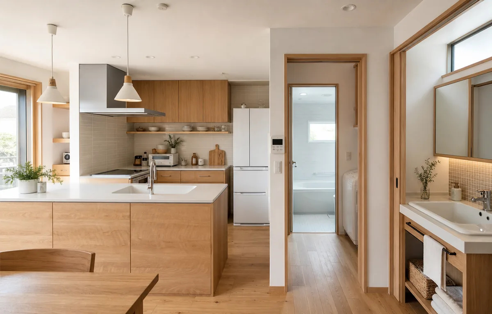
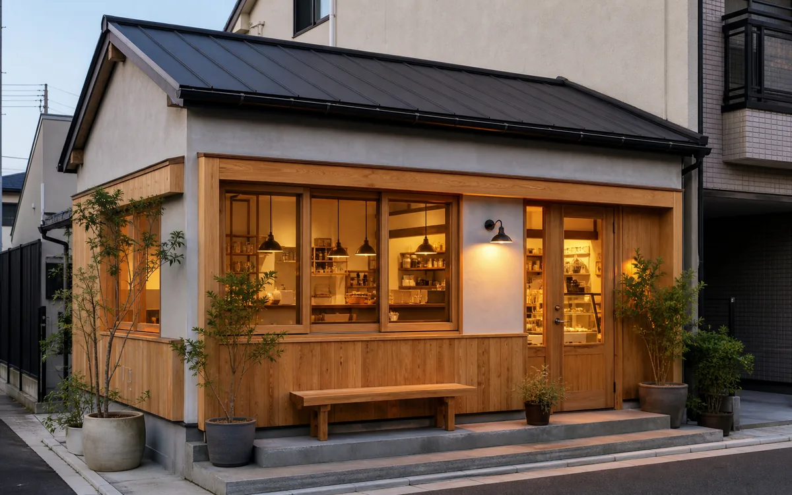
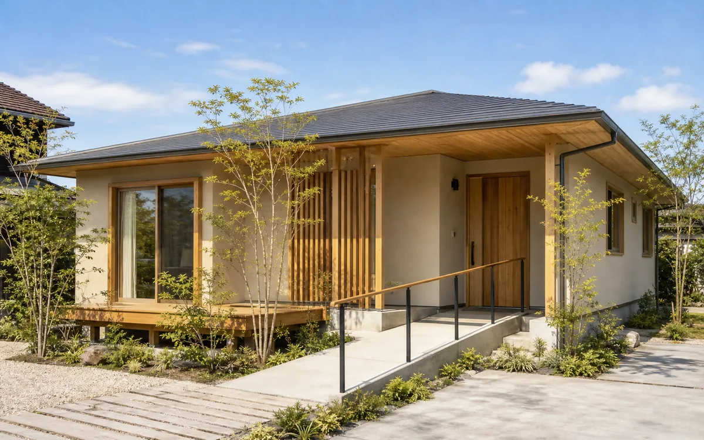
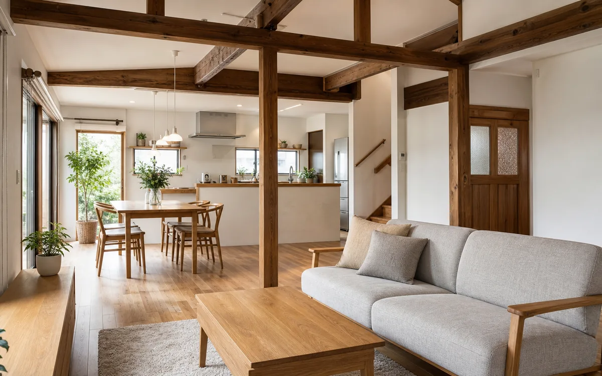
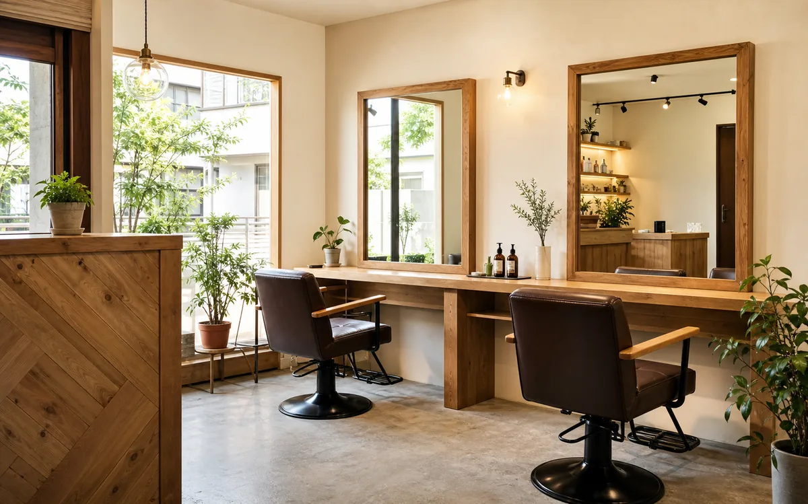

注文住宅
築地を受け継ぐ二世帯住宅
高齢の親世帯と子世帯が安心して同居できるよう、玄関共用・水回り完全分離の二世帯プランを実現。バリアフリー設計と断熱等級4を両立しました。
多摩市・近隣エリアを中心とした、あおば工務店の施工実績をご紹介します。
高齢の親世帯と子世帯が安心して同居できるよう、玄関共用・水回り完全分離の二世帯プランを実現。バリアフリー設計と断熱等級4を両立しました。

老朽化したキッチン・浴室・洗面台・トイレを一括改修。配管全交換の上でシステムキッチンと1坪タイプ浴室へ入れ替え、光熱費の節減にも貢献しました。

居抜きの焼き鳥店をナチュラルテイストのカフェとして全面改装。天井・床・配管を一新し、厨房設備移設と保健所対応の衛生工事まで一括対応しました。

段差ゼロの完全バリアフリー平屋。国産ヒノキの無垢フローリングと造作キッチンで、将来の夫婦二人暮らしに合わせたコンパクトかつ豊かな住空間を実現しました。

築40年の木造戸建て（4DK）をスケルトンに戻し、現代の生活スタイルに合わせた広々LDK＋洋室2部屋に全面改修。断熱材も入れ替えて夏涼しく冬暖かい住まいに。

テナントビルの一室を美容室として新規開業するための内装工事を全面受注。鏡・チェア・シャンプー台の設置、給排水工事、照明計画まで一括してご担当しました。
まずはお気軽にご相談ください。現地調査・お見積もりは無料です。